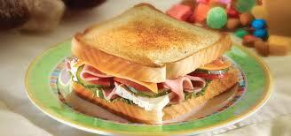

Porciones: 1 porción
Tiempo de preparación: 10 minutos
Ingredientes:
2 Panes. Queso Jamón 2 huevos Lechuga Sal Aceite de oliva Preparación:
En un traste, batimos los 2 huevos con un poco de sal En un sarten con aceite, freimos los huevos batidos Cuando empiecen a cocinarse, le ponemos los 2 panes Le damos la vuelta a los panes hasta que se frian un poco Añadimos el jamón, el queso y lechuga Esperamos a que el queso se derrita y servimos